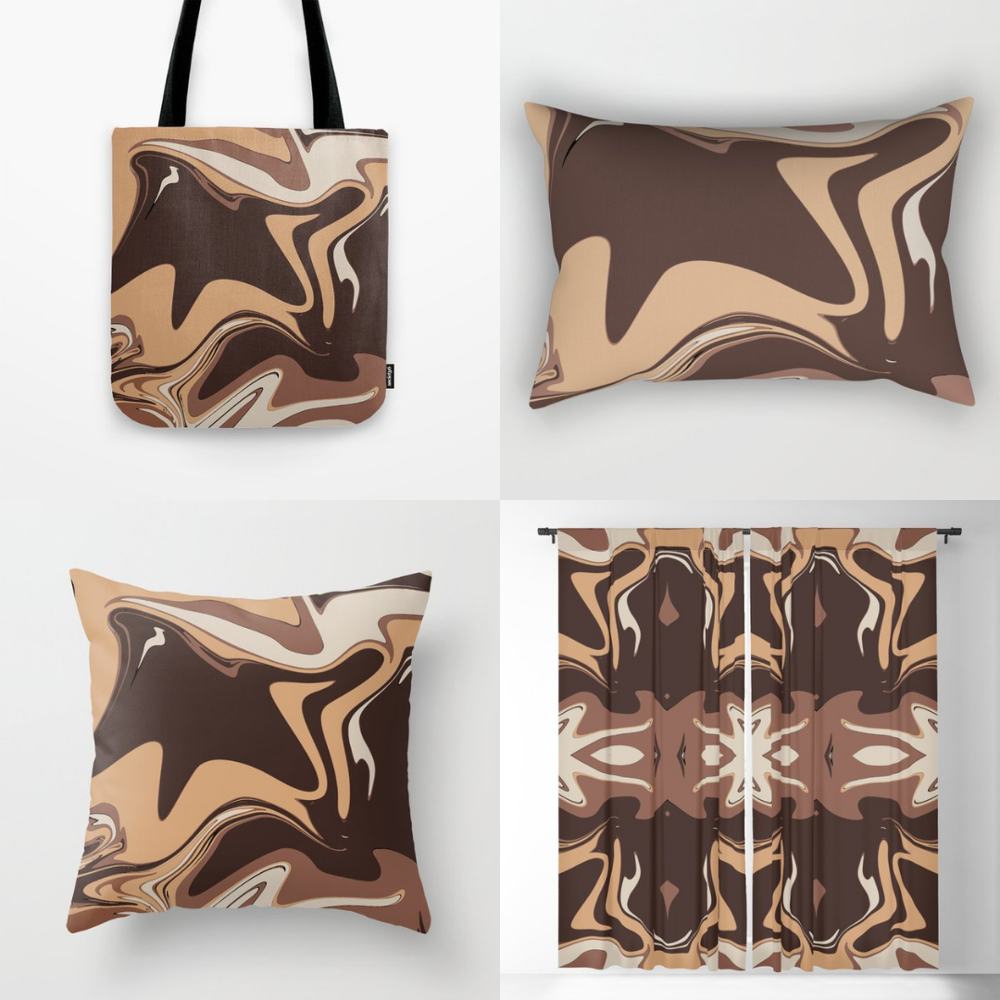
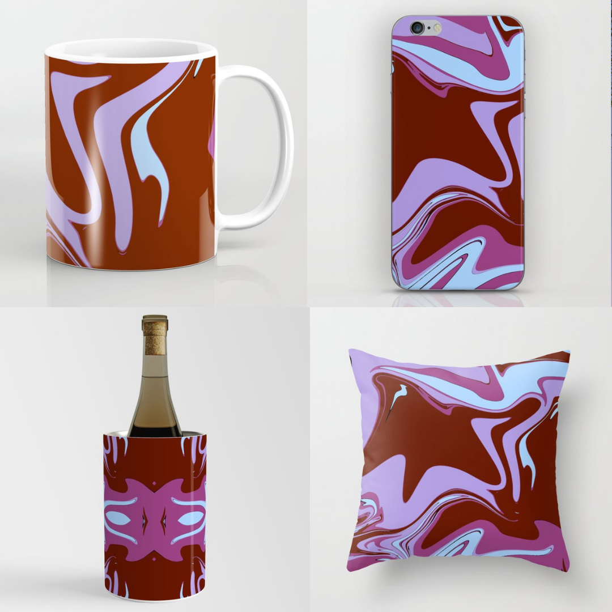
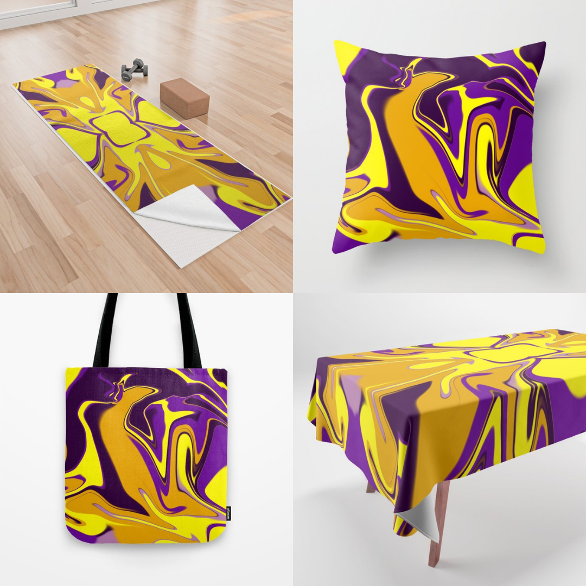
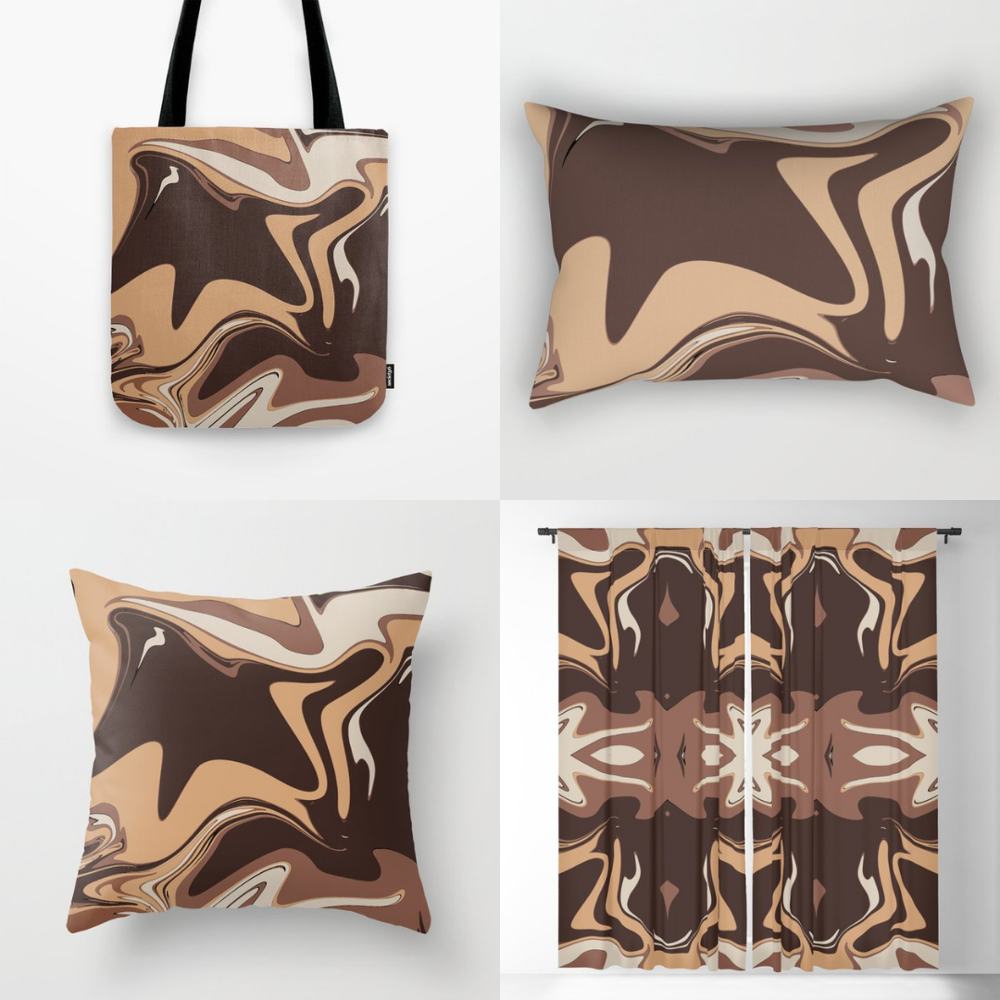
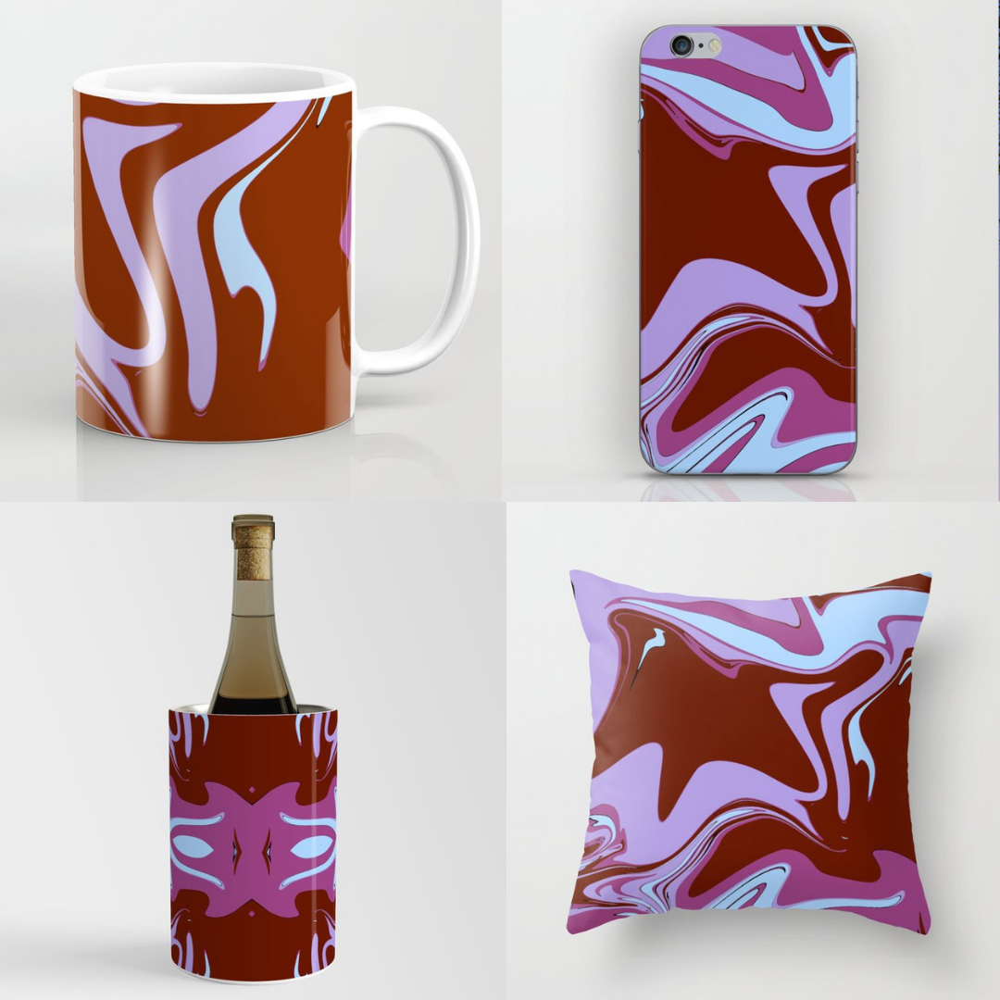
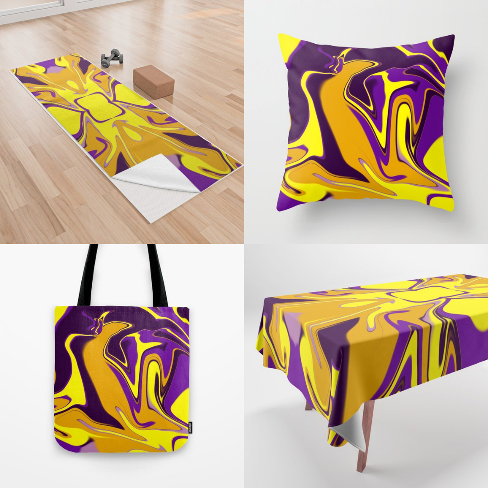
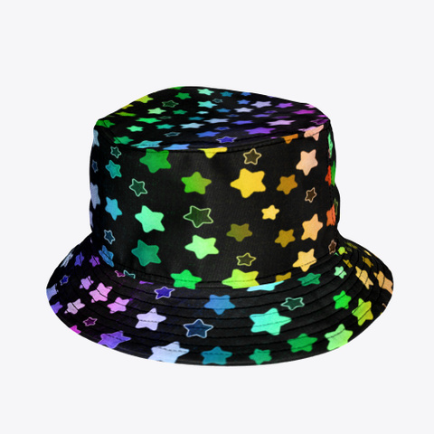
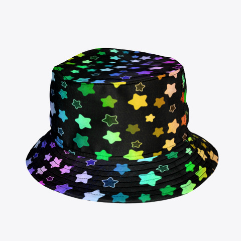

Ciao, sono Kalipinna, e qui è dove puoi trovare i miei design, codici sconto, e scoprire come chiedere colori personalizzati!
Sono qui anche per rispondere a tutte le tue domande & al momento in tutti i miei negozi e in questo sito
ci sono dei "lavori in corso", grandi cambiamenti a breve!
I miei negozi
redbubble
(il più famoso, si possono fare motivi/pattern ed è ottimo per aggiungere design con disegni e frasi, offre tantissimi prodotti, e puoi trovare una spiegazione su come richiedere colori di sfondo personalizzati più in basso dato che ogni design ne ha uno soltanto).society6
(questo sito offre non solo qualche capo di abbigliamento e tanti accessori come borse e cover per cellulari, ma anche arredamento per la casa, decorazioni e oggetti per le varie stanze, cancelleria, e tante altre scelte particolari e inaspettate!)teespring
(qui attiverò solo i prodotti più speciali e introvabili per i miei pattern - almeno quelli adatti all'abbigliamento - e designs con arte astratta. Oltre a questi qualche design con sfondo trasparente d'eccezione che ho creato apposta per questo sito o che ho voluto condividere qui per sfruttare la possibilità di scegliere tra tanti colori di sfondo diversi).threadless
(Dono una parte dei miei ricavi in beneficienza tramite il sito, qui sto attivando le scarpe, borse weekend e altri oggetti speciali per le mie collezion di pattern e arte astratta come su teespring, oltre a dei design particolari che ho attivato in passato).Redbubble
Ecco un breve video registrato oggi (20 novembre 2021) per dare un'occhiata alla prima pagina del mio negozio e vedere che alcuni designs hanno già copie in diversi colori o con motivi/pattern - e come si possono filtrare i risultati in base al prodotto cercato o collezione, o cercarne altri dopo aver cliccato sul design che ti piace.
Il punto è: più di 80 prodotti per ognuno suddivisi in cartelle per aiutarti a trovare ciò che cerchi.
In breve: mandami un messaggio qui, al mio indirizzo email kalipinna@hotmail.com o su uno dei miei social se:
- vedi un design che ti piace ma il prodotto che vuoi non è stato reso disponibile, per esempio "ciao, puoi fare lo zaino di -titolo del design-?"
- vorresti uno dei miei design di Redbubble ma su un altro dei miei negozi, basta anche solo un "puoi copiare il tuo design -nome design- su -nome negozio-?"
- vuoi un colore di sfondo diverso da quello offerto, come "ciao, posso avere questo design su uno sfondo rosso?"
- vuoi qualche piccola modifica come "ciao, questo design ha i colori di quella bandiera lgbt, puoi farmene uno con quest'altra bandiera?" o "puoi farmi questo ma più piccolino sul vestito/molto più grande che copre quasi tutto l'oggetto?"
- hai una richiesta di personalizzazione molto specifica come "puoi metterci il mio nome/segno zodiacale/anno?". In questo caso sarai probabilmente l'unico acquirente quindi per favore chiedi soltanto se sicuro di volere proprio quel design con quella piccola modifica (e una serie di richieste e modifiche farà alzare il prezzo)
Potrei avere domande ma se si può fare, e ciò dipenderà dal sito, inizierò a lavorarci subito o ti farò sapere se non è possibile. Non sei obbligato a comprare nulla in ogni caso!
Avviso "lavori in corso": purtroppo non posso più usare teespring per mostrare come i miei design transparenti appaiano con uno sfondo di colore diverso così che tu possa scegliere il tuo preferito, perchè la barra di ricerca del sito è malfunzionante ed è impossibile ritrovare un design in particolare tra le centinaia che ho fatto. Per questo motivo sto cambiando questo sito e teespring stesso, ritirando la maggior parte dei design offerti (scrivo questo il 12 dicembre 2021) e cambiando il mio utilizzo del negozio.

Society6
Ho iniziato a far parte di Society6 a fine novembre 2021 e lo adoro, ho già creato diverse collezioni e fareste prima ad andarle a vedere che non a leggerne la descrizione:.jpg)
.jpg)
.jpg)
.jpg)

.jpg)
.jpg)
.jpg)
.jpg)   
  
Teespring
Come ho detto prima, sto completamente cambiando il mio negozio di teespring per via dell'impossibilità di usare la barra di ricerca. Manterrò solo qualche design speciale e archivierò il resto, usando questo negozio per offrire specificatamente oggetti più difficili da trovare come felpe con la stampa su tutto il tessuto, costumi da bagno, reggiseni sportivi, e qualche altro oggetto speciale, ma solo per i miei pattern e per design con arte astratta (e ovviamente per qualsiasi design mi sia richiesto). Esempi:.png)
.png)
.png)
.png)
.png)
.png)
.png)
.png) 

Threadless
Nel mio negozio su Threadless, oltre a lasciare un paio di design speciali, proprio come su teespring attiverò oggetti difficili da trovare come scarpe e borse weekend e solo per i miei design con arte astratta e pattern. Il 5% dei miei guadagni sono donati in beneficienza a una causa (presente sulla pagina del prodotto). Non abbino le cause al design, sto solo cercando di sceglierle tutte, una alla volta!.png)
.png)
.png)
.png)
.png)
codici sconto e saldi:
Teespring:
KALIGIFT10 per 10% di sconto fino al 26 dicembre, offerto da me!Society6:
Grandi sconti per le vacanze, non si sa quanto dureranno!e nel frattempo... scegli i tuoi colori! E prendi un bel vestito su redbubble, una borsa weekend su threadless, o pantaloncini su teespring!